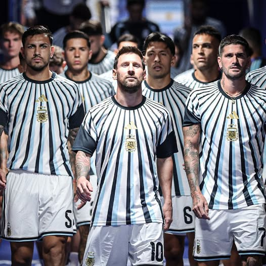
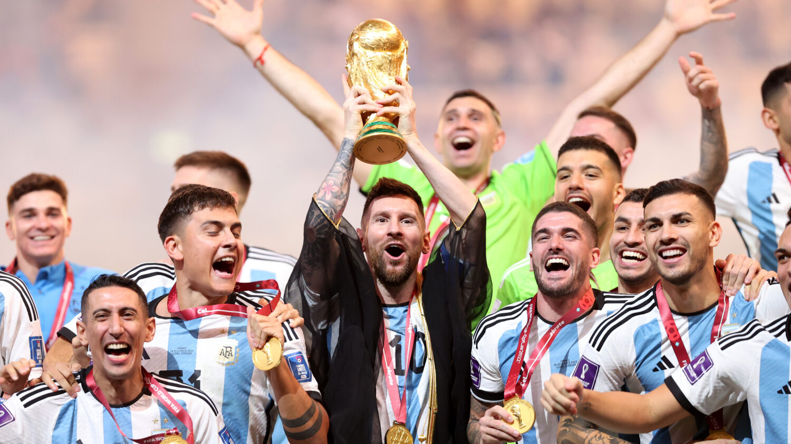
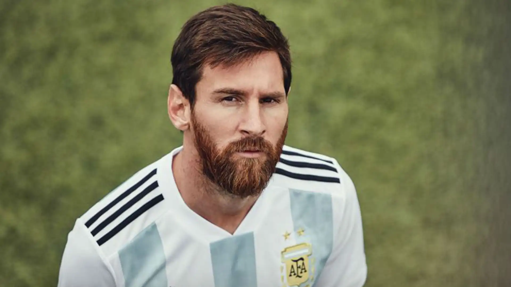
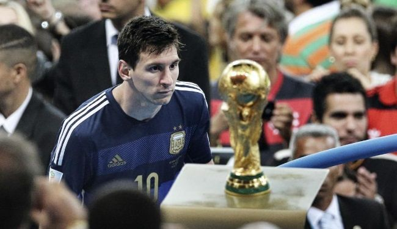
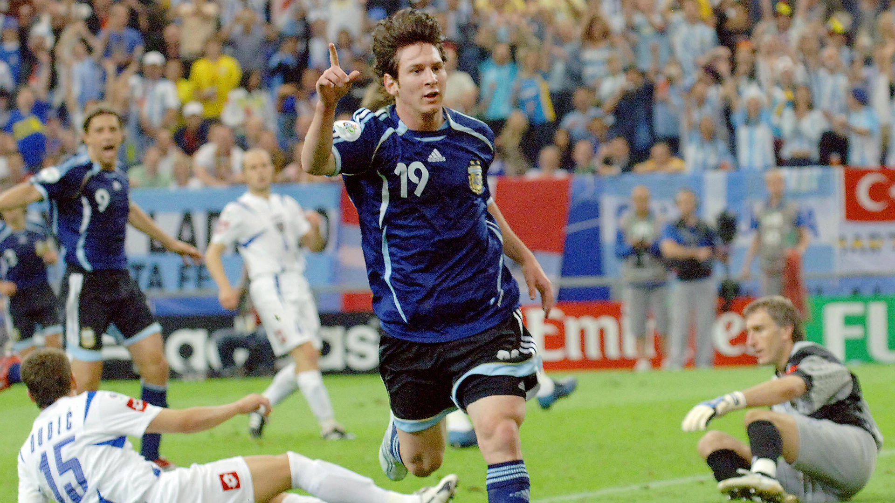
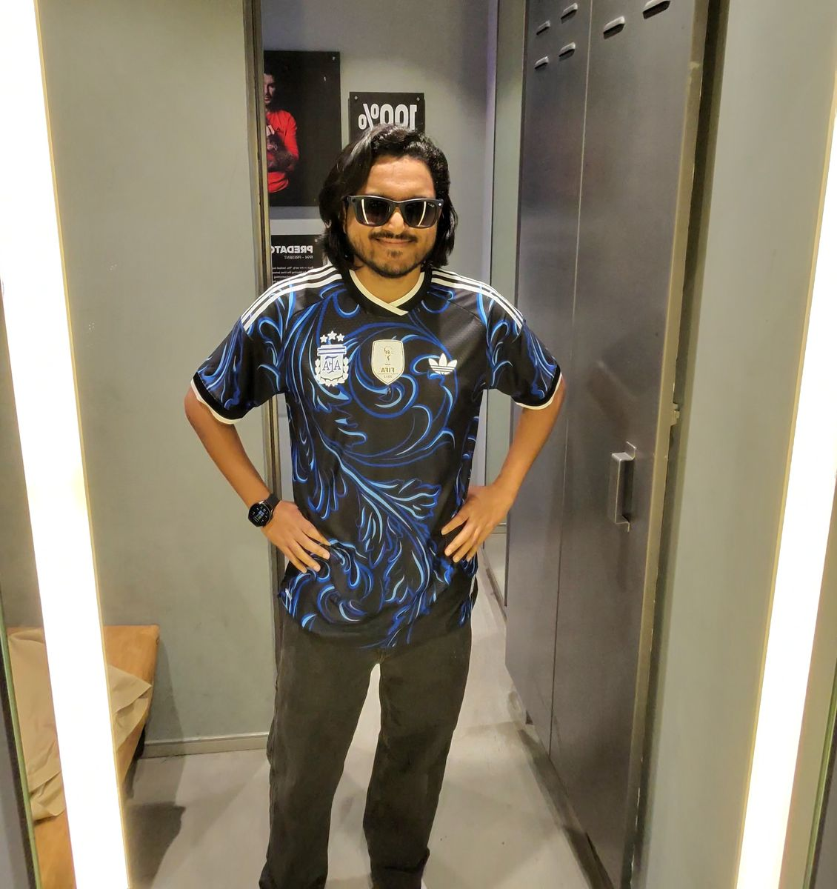
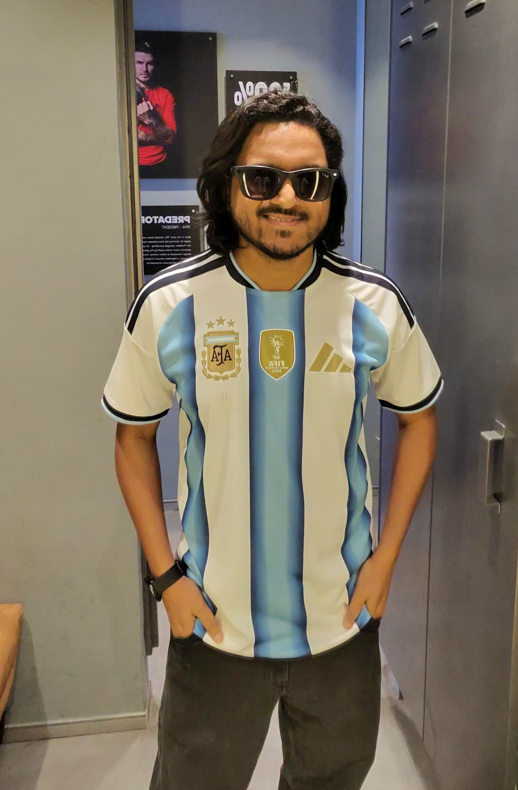

North America
The Last Dance

At 39, the GOAT returns to the World Cup stage one final time. With three stars on the crest he helped earn, Messi's farewell tournament across North America marks the end of an era that redefined the beautiful game. Whatever happens on the pitch, the jersey he wears one last time carries the weight of every dream, every tear, and every moment of magic that made him immortal.
Qatar
The Coronation

At 35, Messi delivered the performance of a lifetime. Seven goals, three assists, and a triumph in the greatest World Cup final ever played — against France. After 120 minutes of sheer drama and a penalty shootout, Messi finally lifted the one trophy that had eluded him. The image of the little Argentine, golden trophy raised high, completed football's greatest ever story.
Russia
The Darkest Chapter

At 31, many believed this would be Messi's last World Cup. The campaign was chaos from start to finish — a frustrating draw, a 3-0 humiliation by Croatia that left him visibly broken, then a dramatic late winner over Nigeria. It ended in a breathless 4-3 Round of 16 defeat to Kylian Mbappé and France. The pixelated jersey became a symbol of a fractured era.
Brazil
So Close, So Far

Messi was magnificent — scoring four goals and dragging Argentina to the final through sheer individual brilliance. He won the Golden Ball as the tournament's best player, but the ultimate prize slipped away in a 1-0 extra-time defeat to Germany at the Maracanã. The image of Messi staring at the trophy he couldn't touch became one of football's most haunting photographs.
South Africa
The Weight of a Nation

Now the reigning Ballon d'Or holder, Messi carried the weight of an entire nation on his shoulders. Despite his brilliance in build-up, he couldn't find the net, and the campaign ended in a devastating 4-0 quarter-final demolition by Germany. The round-collar jersey became a symbol of promise unfulfilled — where Messi learned what it truly cost to lead.
Germany
The Beginning

An 18-year-old Lionel Messi stepped onto the World Cup stage for the first time, wearing the classic wide-striped Albiceleste. He became Argentina's youngest-ever goalscorer with a stunning finish against Serbia & Montenegro — announcing himself as a generational talent. The exit only fueled the fire for what was to come.
D10S
26 World Cup goals. 6 tournaments. 1 trophy that changed everything.
The Albiceleste was never just a jersey — it was a canvas for the greatest story ever told in football.
About the Creator
Somenath Mondal
CREATOR & DEVELOPERAs a developer and a passionate fan of the Argentina national team, I created this visual journey to honor the legendary path of Lionel Messi. Combining WebGL rendering with editorial typography, this platform celebrates the iconic Albiceleste jerseys that witnessed history.
Exploring the convergence of 3D technology, sports heritage, and fine-tuned digital configurators.


Favorite World Cup Campaign?
Which Messi World Cup era meant the most to you? Vote to see live fan standings.
Create Your Fan Card
Generate a custom-themed digital trading card with your name to share Messi's journey.